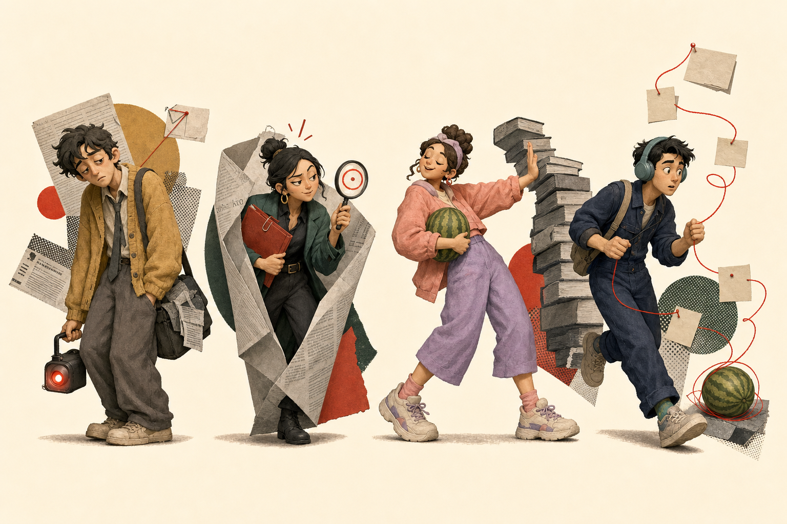
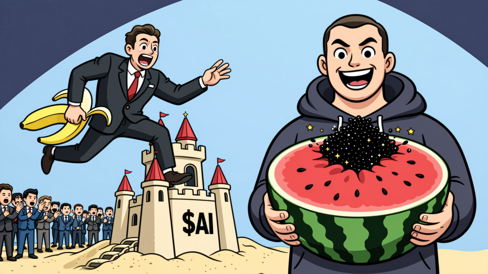

太 长
3000 字深度报道，你支持它存在，但别出现在你今晚的手机里。
红笔批注：读到第二段，忘了第一段讲谁。编辑部正在找人
编辑部里有四位熟面孔：有人电量见底，有人一见通稿就翻窗，
有人等着课代表，还有人已读未回。

不是你不关心 AI，是正经新闻总有办法把你赶出去——
3000 字深度报道，你支持它存在，但别出现在你今晚的手机里。
红笔批注：读到第二段，忘了第一段讲谁。“近日正式发布”“赋能千行百业”——没有人、没有冲突、没有人话。
红笔批注：读者已从第三段翻窗离开。Token 配额、MoE 路由、推理成本同时出现，注意力当场下课。
红笔批注：本人想吃瓜，不想补课。四道暗号，没有标准答案。答完当场发编辑部临时工牌。
编辑部想先确认一件事——
工牌压在这里。
先对完上面四道暗号，编辑部当场揭晓你是谁。
编辑部查到你了
工牌不是纪念品。上岗第一单：在下面这条真实的瓜上，完成三件小事。

7 月 16 日 23:58，月之暗面突袭上线 Kimi K3——全球首个超的模型，分数比 GPT-5.6 高出 12.7%。三小时前，Anthropic 刚官宣自家新模型将商用。翻译成人话：它让所有闭源模型的商业，一夜回到 2019 年。
本篇含 5 个黑话词，已备好人话版。点下划线，或选中任意一句再点「说人话」。
吃瓜站队：哪家大厂会第一个宣布「全面接入 Kimi K3」？